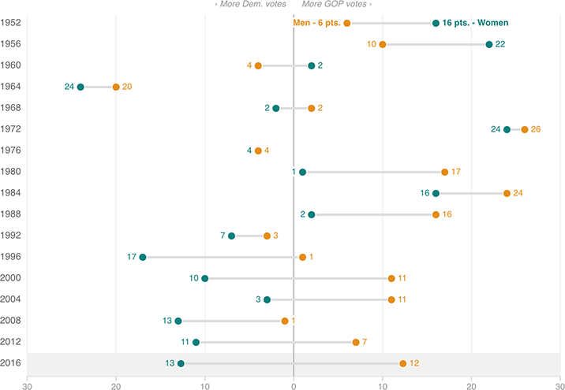

The 2016 Gender Gap Could Be Much Larger Than Usual
As of last week, the gender gap in this year’s election looked poised to be as large as it’s been in more than 50 years. This gap can vary greatly in size based on the poll and the day, so Election Day will be particularly revealing about just how big the partisan gap between men and women is.

Notes
— Data for 2016 are from three recent national polls, averaged together: CBS/NY Times, IBD/TIPP, and ABC/Washington Post.
— Data through 1972 are based on Gallup’s final pre-election polls.